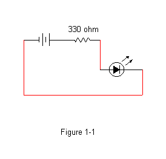
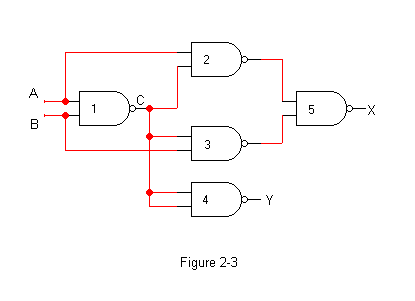

Adapted from a lab originally designed by Prof. Greg Wolffe.
Important: This lab is evaluated entirely by demo. Be sure to demonstrate your circuits to the instructor
when indicated below. You will perform three demonstrations during the lab session.
Watch this video demonstrating how to build circuits on breadboards.
(Yes, it's long; but, it will save you a lot of trouble when doing the lab --- especially the part about switches that
begins at time 22:03.)
- Chapters 1 - 3 describe the basics of digital logic. (See also
Appendix C located on the companion CD of the Patterson and Hennessy
textbook.)
- This site explains how to
determine the number of Ohms a resistor provides based on the colors of its bands.
- Pinouts for the chips in your breadboard kits.
Equipment Care
- Every LED must be connected to a resistor. Failure to do so will damage the LEDs.
- When inserting an IC, be sure that the notch goes to the left, and that pins 7 and 14 are connected correctly.
Failure to do so will damage the chip.
- Avoid touching the pins.
- Never connect an input signal to a CMOS chip when the power
is off. In other words, make sure there is power flowing through
pins 7 and 14 before connecting input wires to a power source.
- Do not remove power if an input signal is still present. In
other words, disconnect power to your inputs before disconnecting
power to the chip or breadboard.
- Monitor the temperature of the chips. If a chip becomes hot to the touch, it usually means that you have either (1) inserted it backwards, or (2) improperly
connected pins 7 and 14 to power and ground.
- Always use the chip puller to remove ICs from the breadboard. Using your fingers will bend the pins.
Your first circuit
Construct the circuit shown in Figure 1-1 and described below. (The video also walks through
how to build this circuit.)

Adding Logic Gates
The logic used gates in this are packaged in integrated circuits containing 14 pins.
Because there are so many pins available, each IC contains multiple logic gates.
For example, the IC labeled 74HCT08 contains four AND gates within the chip, each of which
takes two inputs. The figure below shows the pinout for this chip.

Your kits also include the following integrated circuits:
| Designation |
Operation |
| 74HCT00 |
NAND |
| 74HCT02 |
NOR |
| 74HCT08 |
AND |
| 74HCT32 |
OR |
| 74HCT86 |
XOR |
They are all quad 2-input ICs - meaning there are four gates within each chip, where each gate takes two input.
This page shows the pinouts for these chips.
To investigate the operation of an integrated circuit that
implements the AND function, construct the following circuit:

- Construct a truth table from your observations.
- Take the wires attached to input
B and leave the other
end floating in the air. Describe the effect of having this
"floating input". (To get some more interesting behavior, grab the
floating ends with your fingers and wiggle them.)
Switches
It is much more convenient to use switches to control whether an input
wire has a logical true or a false on it; however, as you noticed, floating
inputs can cause erratic behavior. The Using Switches page (as well as
the video)
explains how to correctly use the two types of switches in your kit.
- Add dip switches to the circuit you just built (the one shown in
Figure 1-3). Demonstrate to the instructor or lab assistant that
your circuit works correctly.

Experiment
- Get a random IC from the instructor. Replace your
74HCT08 ("AND gate chip") with the new
chip. Construct a truth table from your observations. Identify the
type of gates the chip contains. Show your truth table to the instructor or lab assistant.
Creating a more complex combinatorial circuit
Digital logic is implemented by using basic logic gates as building blocks
to create more complex circuits. A combinatorial circuit is a set
of gates whose output function depends only on the values of its current
inputs (i.e., there is no storage or feedback involved in the system).
Build the common combinatorial circuit shown below. Use DIP switches in the "pull-down"
configuration to control the values of A and B.

-
Determine the truth table from observation. Place the column
for
Y to the left of the column
for X. In other words, treat YX as
a two-bit number.
-
Using your observations as a guide, describe what simple operation
this circuit implements. (Did you place the column for
Y to the left
of the column for X?)
- Demonstrate your circuit and truth table to the instructor (or lab assistant).
Debugging
- Do all LEDs have resistors?
- Are all LED resistors less than 1000 Ohms?
- Are all chips inserted with the notch to the left?
- Is pin 14 of each chip wired to the positive power bus?
- Is pin 7 of each chip wired to the negative power bus?
- Are there any floating inputs?
- Does every switch have a resistor?
- Is every switch's resistor at least 1000 Ohms?
Updated Thursday, 6 January 2022, 2:18 PM